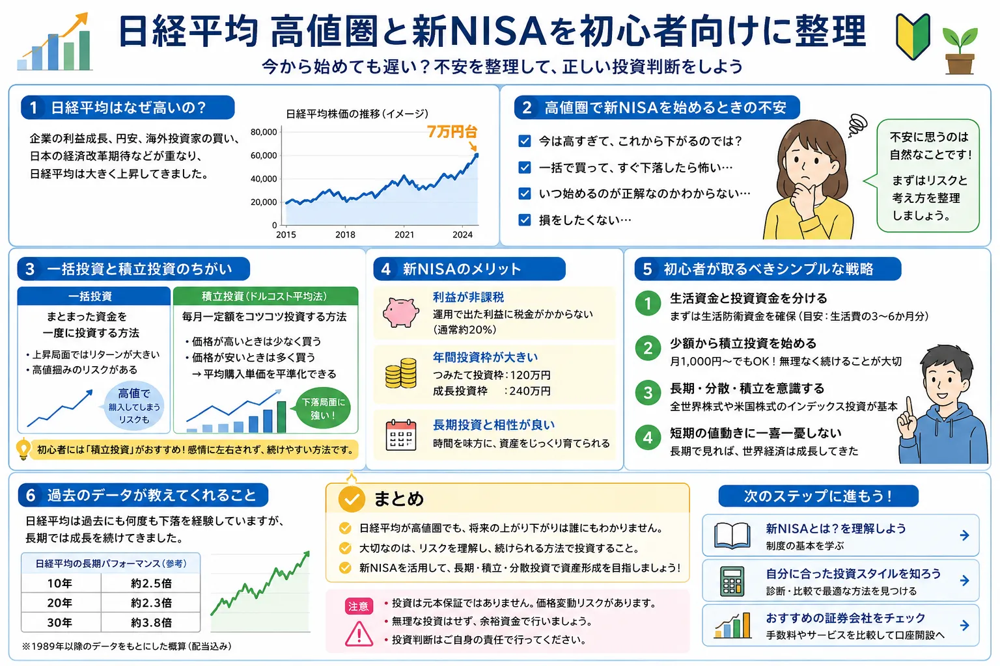

Market
日経平均7万円時代とは？なぜ今話題なのか
2026年6月、日経平均株価は7万円台へ乗せ、史上最高値圏で推移する場面がありました。背景としては、AI・半導体関連株への期待、海外株高、企業業績、外国人投資家の買いなど、さまざまな要因が語られています。
話題性
「日経平均 7万円」が大きなニュースに
史上最高値圏という言葉は、投資経験が少ない人ほど強く印象に残ります。相場が上がっているニュースを見ると、乗り遅れたような焦りも出やすくなります。
背景
AI・半導体など一部テーマの強さ
上昇相場では、指数全体が上がっているように見えても、実際には一部の大型株やテーマ株が大きく押し上げている場合があります。
注意点
理由がある上昇でも「今すぐ買えばよい」とは限らない
上がっている理由を知ることは大切ですが、それだけで投資判断を急ぐ必要はありません。初心者に大切なのは、ニュースの勢いに流されないことです。
株価が上がる理由は一つではなく、企業業績・金利・為替・需給・ニュースなどが重なって動きます。相場全体の値動きの基本は、株価はなぜ上下するのか？でも整理しています。
Mindset
高値圏で初心者が不安になるのは自然なこと
「日経平均が高すぎる」「今から新NISAを始めるのは怖い」と感じるのは、決して変なことではありません。むしろ、初めて大切なお金を投資するなら、不安を感じる方が自然です。
下落時のメンタルダメージは想像以上に大きい
投資経験が少ないうちは、評価額が数千円下がるだけでも気になりやすいです。特に、最初から大きな金額を入れると、毎日の値動きに生活や気分が引っ張られてしまうことがあります。
怖いのは値下がりそのものだけではない
投資で怖いのは、値下がりした瞬間に焦って売ってしまい、その後の回復を待てなくなることです。凡人目線で言えば、画面が赤字になると冷静でい続けるのはかなり難しいです。
まずは「自分が耐えられる金額」を知る
投資初心者にとって最初の目標は、相場を完璧に当てることではありません。自分がどれくらいの値動きなら落ち着いて見ていられるかを知ることが、リスク管理の第一歩です。
下落時に焦って売ってしまう心理は、投資初心者にとって大きな落とし穴です。損失が出たときの判断ミスについては、損失が出ると冷静な判断ができなくなる理由も参考になります。
Lump Sum Risk
なぜ初心者は今すぐ全額一括投資しない方がよいのか
一括投資が絶対に悪いわけではありません。上昇相場では、早く投資した方が利益を得やすい場面もあります。ただし、高値圏で初心者がいきなり大きな金額を入れると、直後の下落で心理的な負担が大きくなりやすいです。
- 生活資金や近い将来使うお金まで投資に回すのは危険です。
- 「早く増やしたい」という気持ちは、焦った判断につながりやすいです。
- 一括投資は資金量だけでなく、下落時に耐えられるメンタルも必要です。
一括で入れるか、分けて入れるかは、リターンだけでなく資金管理の問題でもあります。考え方の違いは、一括投資と分割投資の違いとは？や資金管理の基本でも確認できます。
| 投資方法 | メリット | 注意点 | 初心者向けの考え方 |
|---|---|---|---|
| 一括投資 | 上昇相場では利益を得やすい | 下落時の損失が大きく見えやすい | 余裕資金とメンタル耐性が必要 |
| 積立投資 | 時間を分散できる | 短期で大きく増えるとは限らない | 初心者が始めやすい |
| 1株投資 | 少額で個別株を体験できる | 分散不足になりやすい | 練習用として使いやすい |
※ 横にスクロールできます
Defense
日経平均7万円時代の初心者向け防衛策
日経平均7万円 新NISAという話題を見ても、焦って動く必要はありません。初心者は「どれだけ増やすか」より先に、「大きく失敗しにくい始め方」を考える方が現実的です。
新NISAの積立投資で時間を分散する
毎月一定額を積み立てる方法なら、高いときも安いときも買うことになります。買うタイミングを当てに行かず、時間を分散するのが特徴です。
この考え方は、ドルコスト平均法とは？でも詳しく整理しています。
1株投資で少額から日本株を体験する
通常、日本株は100株単位が基本ですが、証券会社によっては1株単位で買える場合があります。数百円〜数千円から個別株の値動きを体験できることもあります。
最初から大金を入れず、値動きに慣れる目的なら、少額投資は練習として使いやすい選択肢です。少額投資の良い点と注意点は、少額投資のメリット・デメリットでも整理しています。
生活資金と投資資金を分ける
生活費、緊急時の予備資金、近い将来使うお金は投資に回さないことが大切です。投資は余裕資金で行い、下落しても生活が崩れない範囲にします。
資金の分け方は、リスクとリターンとは？や資金管理の基本も参考になります。
New NISA
新NISAを今から始めるのは遅い？
結論から言うと、「遅い・早い」だけで判断するよりも、無理のない金額で長く続けられるかを考える方が大切です。日経平均が高値圏だから完全に見送る、という考えも一つです。ただし、完璧なタイミングを待ち続けると、いつまでも始められないこともあります。
一括で始める場合
開始時点の価格が重要になりやすく、直後の下落で不安になりやすいです。まとまった金額を入れるなら、下落しても生活とメンタルが崩れない範囲にする必要があります。
積立で始める場合
開始時点を一点で決めすぎず、時間を分散しながら買えます。短期で大きく増える方法ではありませんが、初心者には心理的に続けやすい考え方です。
少額で試す場合
まずは少額投資で値動きに慣れる方法もあります。最初から大きく勝つことより、画面の見方や自分の感情の動きを知ることが目的になります。
新NISAは短期売買で一気に利益を狙うためだけの制度ではなく、長期の資産形成を考えるための制度です。実際に始める前に、初心者向け証券会社一覧、積立投資とは？、長期投資とは？もあわせて確認してください。
Account
初心者が口座選びで見たいポイント
この記事では、特定の証券会社を「この一択」と断定することはしません。ネット証券 初心者が見るなら、次のような観点で比較すると整理しやすくなります。
-
新NISAに対応しているか
積立設定や成長投資枠の使い方が分かりやすいかを確認します。
-
1株投資に対応しているか
日本株を少額から試したい人は、1株単位の取引可否を見ておくと選びやすいです。
-
手数料が分かりやすいか
安さだけでなく、どの取引で費用がかかるのかを理解しやすいことも大切です。
-
アプリや画面が見やすいか
初心者は機能の多さより、注文画面や保有資産画面の分かりやすさが重要になることがあります。
-
投資信託の積立設定がしやすいか
新NISAで積立投資を考えるなら、設定変更や金額確認のしやすさも確認したいポイントです。
-
初心者向け情報が見やすいか
はじめての投資では、分からない言葉をすぐ確認できるかも安心材料になります。
Avoid
初心者が避けたい行動
日経平均 高すぎると感じる相場では、不安と焦りが同時に出やすくなります。次のような行動は、初心者ほど注意したいところです。
- ニュースを見て焦って全額投資する
- SNSで話題の銘柄をそのまま買う
- 生活費まで投資に回す
- 下がった瞬間に怖くなって売る
- 短期で必ず儲かると思い込む
- 自分に合わない金額で始める
投資初心者 高値圏で大切なのは、相場を当てることよりも、失敗しにくい行動を先に決めておくことです。判断に迷いやすい人は、一括投資と分割投資の違いとは？、株価はなぜ動く？、投資でやってはいけないこと5選も読んでおくと、ニュースとの距離感を取りやすくなります。
FAQ
よくある質問
日経平均が7万円のときに投資を始めるのは危険ですか？
危険かどうかは投資方法と金額によります。一括で大きな金額を入れると下落時の負担が大きくなりますが、積立や少額投資ならリスクを抑えながら始めやすくなります。
新NISAは今から始めても遅いですか？
遅いと決めつける必要はありません。重要なのは、短期の値動きではなく、無理のない金額で長く続けられるかです。
日経平均が高いときは何もしない方がいいですか？
見送る選択もあります。ただし、完璧なタイミングを待ち続けると始められないこともあるため、少額や積立で慣れる方法もあります。
初心者は一括投資と積立投資のどちらが向いていますか？
一般的には、値動きに慣れていない初心者は積立投資の方が心理的負担を抑えやすいです。
1株投資は初心者に向いていますか？
少額で個別株の値動きを体験できるため、練習としては使いやすい方法です。ただし、集中投資にならないよう注意が必要です。
まとめ
日経平均7万円でも、焦って買う必要はない
日経平均7万円は大きな話題ですが、初心者に大切なのは、相場を当てることよりも大損しにくい仕組みを作ることです。一括投資ではなく、積立投資や1株投資で少額から慣れる方法もあります。
新NISAは短期勝負ではなく、長期の資産形成として考える制度です。自分が不安にならない金額から始めることが、長く続けるコツになります。
ご利用にあたっての注意事項
本記事は情報提供および金融教育を目的としており、特定の銘柄・投資信託・証券会社の利用を推奨するものではありません。株式・投資信託等の取引は元本保証がなく、相場変動等により損失が生じる場合があります。取引開始前に、契約締結前交付書面や商品説明書、目論見書等を必ずご確認のうえ、ご自身の判断と責任でお取引ください。